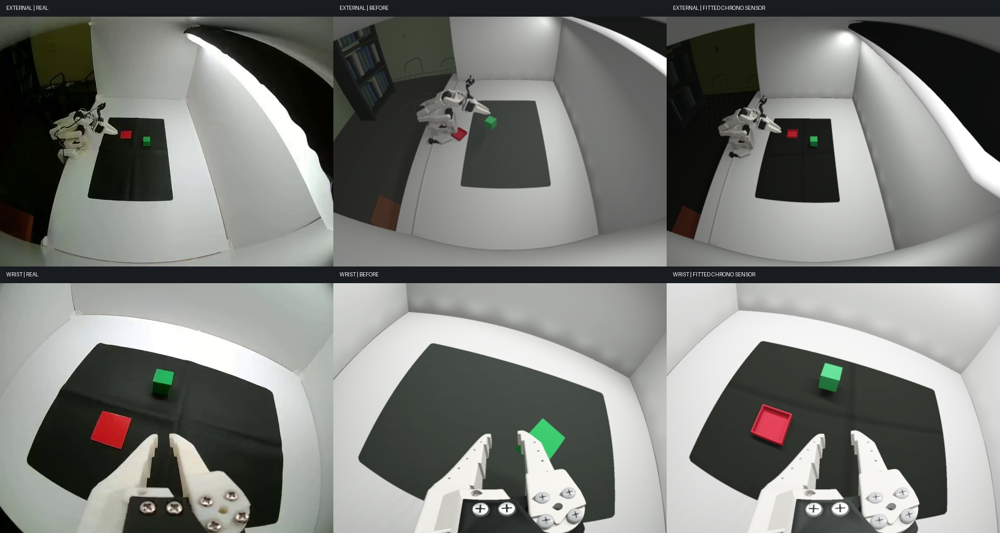

The real frame is on the left of each video; the synchronized sensor render is on the right.
The arm follows recorded observation.state through an approximate visual motor map.
Real / previous default / fitted sensor.

The external floor/mat landmarks fit at 2.76 px RMS with the lens held fixed.
| Run | External RGB MAE / 255 | Wrist RGB MAE / 255 |
|---|---|---|
| Previous default, episode 0 (361 frames) | 53.53 | 31.99 |
| Fitted, episode 0 (361 frames) | 21.30 | 27.76 |
| Fitted, episode 1 (334 frames) | 21.35 | 35.20 |
Errors include every RGB pixel before video compression. No image alignment or crop is applied. Episode 0 was used for response fitting. The baseline uses the previous nominal camera and scene; object reconstruction also depends on camera pose.
This is kinematic visual replay. Motor coordinates, room geometry and camera response are estimates. Cube translation is reconstructed from color centroids with fallbacks; object rotations are fixed. The retained simulation tray has a taller rim than the recorded plate. These videos do not validate grasp physics.